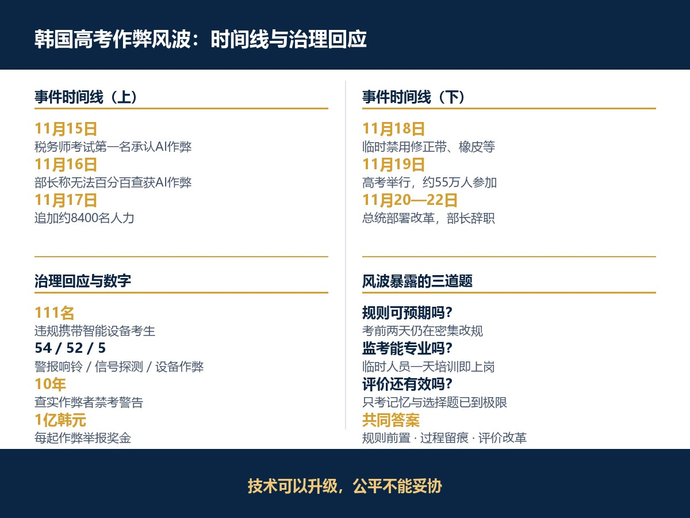

11 月 22 日，韩国教育部长官崔教振递交辞呈，韩国总统李在明随后接受。辞职的直接原因，是 2027 学年度大学修学能力考试期间防范 AI 作弊措施反复调整、组织混乱。此前一天，总统已经用“考试公平是一项永远不能妥协的原则”回应社会关切。一场考试作弊风波，最终让教育主管部门最高负责人下台，说明它触及的不是一次技术失误，而是公众对教育公平底层信任的警报。

一、事实层面：从 11 月 15 日到 22 日发生了什么
事件的导火索出现在考试前四天。11 月 15 日，一名在韩国注册税务师考试中以高分获得第一名的考生承认，利用微型摄像头和 AI 工具作弊并向警方自首。此前，法学资格考试、金融投资分析师考试、英语托业考试等场景也陆续出现利用 AI 作弊的指控。考试公平从高考延伸至各类资格评价，社会焦虑迅速累积。
11 月 16 日，崔教振在国会面对“能否百分百查获 AI 作弊”的质询时给出否定回答。这个回答本身符合技术常识，却让公众更不相信官方防作弊体系。11 月 17 日，政府宣布追加约 8400 名人力，包括 1800 多名智能设备专门检查人员和 6600 多名走廊监考人员，并要求在考生衣服纽扣处贴标识贴纸。11 月 18 日，又临时修改考试用品规定，禁止携带原本允许的修正带、橡皮和自动铅笔笔芯，仅允许使用黑色铅笔。
11 月 19 日，约 55 万名考生参加高考。政府在全国范围发送最高级别灾难警报，考前一次、考中不定时一次，开机手机无法拒收，以最大音量持续约 10.5 秒，用来排查是否有考生违规携带手机。11 月 20 日，韩国教育部通报查处 111 名违规携带智能设备的考生：54 人在灾难警报时手机响铃被发现，52 人在无线网络信号探测等检查中被发现，另有 5 人因使用智能眼镜和微型摄像头等设备被抓现行。
李在明 20 日在青瓦台召开会议，要求有关部门与 AI 企业合作，彻查过往考试中可能存在的作弊行为，并推动高考制度全面改革。21 日，他进一步表示，每举报一起作弊可获 1 亿韩元奖金，主动承认并举报其他作弊者可获从轻处罚。22 日，崔教振发表声明称，考试规定在临近考试时多次变化，给考生和公众带来不便，作为主管部门负责人无法回避准备不足的批评，因此决定辞职。
二、我的看法：部长辞职是必要问责，但真正的问题不止在人
我的第一个看法是，这次风波暴露的不是“抓不到作弊者”，而是“规则来得太晚”。教育公平包含两个层面：结果的公平和程序的公平。111 名违规考生被查处，说明技术筛查并非无效；但考前两天追加人力、考前一天临时改文具、监考人员紧急视频培训，说明主管部门没有把 AI 作弊风险纳入常态化治理。规则可以调整，但重大考试的规则如果在临考前密集变化，考生、家长和学校就会失去准备时间，程序的可预期性本身已经被损害。
我的第二个看法是，把公平寄托在设备对抗上，注定越走越被动。智能眼镜、微型摄像头、手机、无线信号，作弊工具不断小型化、低成本化；监管方则需要增加人力、升级设备、扩大检查范围，成本呈几何级上升。韩国教师团体批评临时抽调人员一天培训就上岗，难以识别高度隐蔽的 AI 作弊，这个批评是成立的。考试公平如果长期依赖“矛与盾”的军备竞赛，最终会把压力转嫁给一线教师，也会让考生处在更强的怀疑氛围里。
我的第三个看法是，部长辞职是问责链条的必要一环，但不能代替制度复盘。公众需要知道：AI 作弊风险为什么没有更早进入预案？规则为什么拖到考前才改？监考人员培训为什么压缩到一天？哪些环节属于判断失误，哪些属于流程失灵？如果只完成人事更替，不公布复盘、不修订流程，下一次新技术出现时，同样的事情仍会重演。
我的第四个看法是，最值得重视的不是“这次抓了多少人”，而是“还有多少人没被发现”。一名正在备考的考生提出这个问题，代表了很多人的真实焦虑。考试公信力一旦从“默认可信”滑向“默认可疑”，即使绝大多数考生守规，整个制度也会被少数事件拖累。重建信任不能只靠重罚，更要靠透明、可追溯、前后一致的规则。
三、对院校与国际教育的启示：AI 使用边界必须前置
这场风波对研究院服务的院校和国际教育客户同样有直接启示。韩国留学和中韩合作项目在招生、分班、奖学金评定和课程考核中，普遍依赖考试成绩与校内评价。如果 AI 使用边界没有写进课程大纲、考试规则和学术诚信制度，一旦发生争议，学校和学生都会陷入被动。
院校需要把“允许用什么、禁止用什么、如何声明、如何留痕”讲清楚。写作、作业、测验、面试、论文、作品集，不同场景对 AI 的容忍度不同。与其事后追责，不如在入学教育、课程说明和考核规则中前置告知，并保留过程证据。这样既能保护公平，也能保护学生不因不了解规则而承担过重后果。
国际教育服务机构也要把学术诚信纳入合规审查。过去评估一个海外项目，重点看院校名单、专业设置、语言要求和学历认证；现在还必须看其评价方式、考试管理、AI 政策和申诉机制。一个项目如果只看分数、不问过程，在 AI 时代的公信力会持续下降。
四、趋势判断：从一次考试分数走向可审计的能力证据
其一，防作弊会从设备检查转向过程证据。未来高利害考试仍会使用金属探测、信号屏蔽、身份验证等技术，但更重要的是过程留痕：答题轨迹、写作过程、口试追问、项目答辩和校内评价记录。单一时间点的试卷成绩，会逐步让位于多来源证据。
其二，评价标准会更多引入论述、写作与实操。韩国国家教育委员会已在研究扩大校内学业评价中的论述和写作题型，教育界也有人提出把高考转型为资格考试、赋予大学更大招生自主权。这些方向都不能简单复制，但共同指向一个判断：只考查记忆与选择题的考试，最容易在 AI 时代失去区分度。
其三，“会提问”会比“会作答”更重要。生成式 AI 擅长基于已有信息输出结果，难以替代高质量问题、原创判断和跨学科连接。未来的人才评价会更关注学生能不能定义问题、拆解任务、验证答案、说明工具使用边界。这对课程设计和招生评价都是结构性挑战。
其四，教育治理会把“可预期性”写进应急预案。成熟的教育主管部门不会等到事件发酵才临时加码，而会在考试前更早发布稳定规则、开展压力测试、培训专业人员，并设置清晰申诉通道。对跨区域、多语种的留学考试和联合培养项目而言，规则一致性和双语告知尤其重要。
结语
韩国高考作弊风波给所有教育治理者提了一个醒：AI 时代，考试公平不能靠临时救火，也不能靠无限升级的探测设备。公平的根基是清楚的规则、稳定的程序、专业的执行和可追溯的证据。技术可以升级，规则必须提前；工具可以改变，勤奋付出应当获得相称回报的原则不能动摇。
本文所引事实来自韩联社、新华社、央视新闻及公开报道，相关看法为个人研究与行业趋势判断，不构成报考、留学或政策建议。